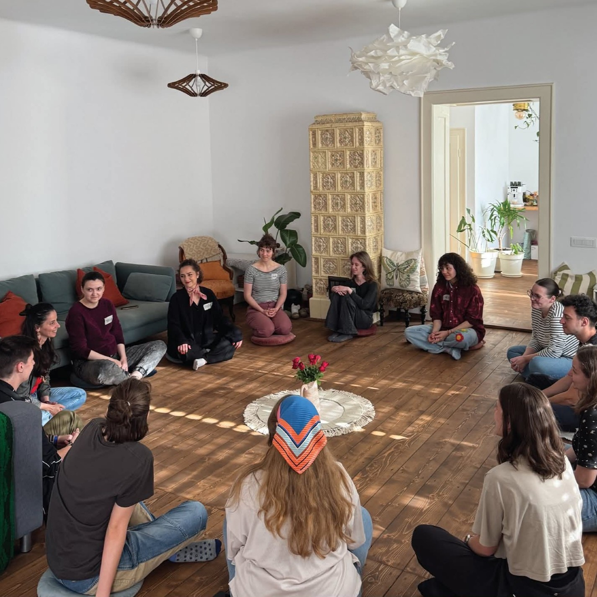

Conexiuni prin Diversitate
„Conexiuni prin Diversitate” este un proiect inițiat de Asociația Youth DiVision Sibiu, cu sprijinul programului Corpul European de Solidaritate. Proiectul a avut ca scop promovarea incluziunii sociale prin crearea unui spațiu autentic de învățare, dialog și exprimare liberă pentru tinerii din Sibiu.
Desfășurare proiect: ianuarie – iunie 2025
Finanțator: Corpul European de Solidaritate, proiectul de solidaritate cu numărul 2024-3-RO01-ESC30-SOL-000278650